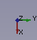
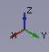

|
| Descrizione |
|---|
| Questa macro ruota la vista corrente di 90° a sinistra. Funziona solo se si è in vista dall'alto |
| Autore |
| Yorik |
| Link |
| Esempi di macro Come installare le Macro Personalizzare la barra degli strumenti |
| Versione |
| 01.00 |
| Data ultima modifica |
| 2010-11-17 |
Descrizione
Questa macro ruota la vista corrente di 90° a sinistra. Funziona solo se si è in vista dall'alto 
import math from pivy import coin cam = Gui.ActiveDocument.ActiveView.getCameraNode() rot = coin.SbRotation() rot.setValue(coin.SbVec3f(0,0,1),math.pi/2) nrot = cam.orientation.getValue() * rot cam.orientation = nrot
Desrizione
Questo codice
- nel modo 1 fornisce la vista assonometrica con Y rivolto verso l'alto

- nel modo 2 fornisce la vista assonometrica con Z rivolto verso l'alto 

{kind=link}
{kind=link}
import math
import pivy
from pivy import coin
Gui.activeDocument().activeView().viewAxonometric()
Gui.SendMsgToActiveView("ViewFit")
cam = Gui.ActiveDocument.ActiveView.getCameraNode()
rot = coin.SbRotation()
rot.setValue(coin.SbVec3f(1,0,0),-math.pi/2) # Y pointing upwards (mode 1)
#rot.setValue(coin.SbVec3f(0,0,1),math.pi/2) # Z pointing upwards (mode 2 uncomment for use)
nrot = cam.orientation.getValue() * rot
cam.orientation = nrot
Gui.SendMsgToActiveView("ViewFit")
Descrizione
Questo codice incollato nella console Python di FreeCAD (o in una macro) consente di ruotare la vista sui 3 assi dell'angolo (in gradi) utile per creare un piano nella posizione desiderata
Uso
Incollare il codice nella console Python di FreeCAD e premere Enter > Enter
Script
def RotateView(axisX=1.0,axisY=0.0,axisZ=0.0,angle=45.0):
import math
from pivy import coin
try:
cam = Gui.ActiveDocument.ActiveView.getCameraNode()
rot = coin.SbRotation()
rot.setValue(coin.SbVec3f(axisX,axisY,axisZ),math.radians(angle))
nrot = cam.orientation.getValue() * rot
cam.orientation = nrot
print axisX," ",axisY," ",axisZ," ",angle
except Exception:
print "Not ActiveView "
esempio da incollare nella console:
RotateView(0,1,0,45)
Se non c'è nessun documento aperto restituisce un errore